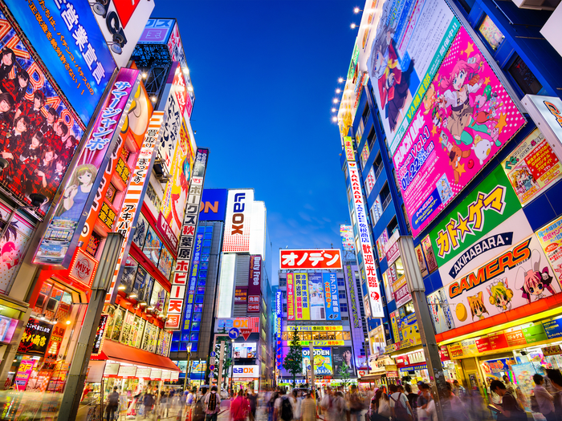
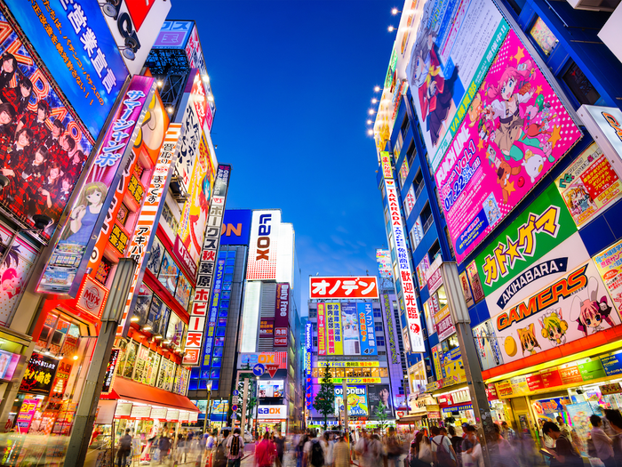

An East Asian country near China and North Korea. It is famous for its scenery and contribution to art — Anime. Japan is a disciplined country which makes it safe to travel.
How to get there
Apply for a Japan visa then book a flight to Tokyo
Other Places to Visit
Kyoto:

Osaka: